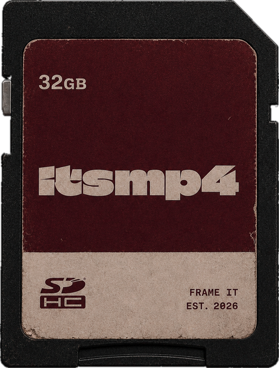

Livio
Krummenacher

Ich bin Livio, Filmemacher aus Luzern.
Ich filme Events, Musik und eigene Projekte. Meistens nachts in Clubs, manchmal in den Bergen oder am Meer.
Kamera, Schnitt und Farbe mache ich selbst.
- Name
- Livio Krummenacher
- Basis
- Luzern, Zentralschweiz
- Fokus
- Events, Musik, eigene Projekte
- Seit
- 2026